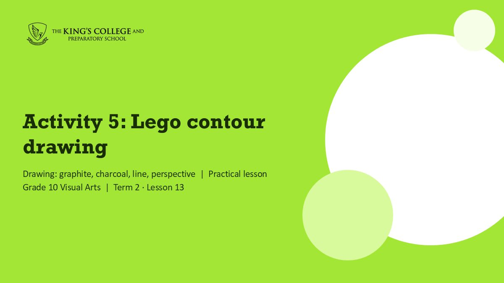

Term 2 · Lesson 13 · Practical lesson
Activity 5: Lego contour drawing
Start here
Today I will
- Measure proportions by sighting
- Draw the studs as accurate ellipses
- Make a clean contour drawing of a Lego construction
Think first
A Lego brick is designed to be perfectly regular. Why might that make it harder to draw than a leaf?
Words to know
- Contour
- A line that follows the outer and inner edges of a form.
- Proportion
- The size of one part compared with another part or with the whole.
- Scale
- The size of an object compared with another object, or with its real size.
- Observation
- Drawing from what you actually see in front of you, not from memory.
- Sighting
- Measuring angles and proportions with a pencil held at arm's length.
Slides

Notes
Observing small manufactured forms: contour, proportion and ellipses on Lego pieces.
Measuring what you see
- Fix your viewpoint: Sit still and keep one eye closed when you measure; the construction must not move.
- Choose a unit: Use one stud or the height of one brick as your unit of measurement.
- Sight with a pencil: Hold the pencil at arm's length, line up the unit and compare it with other parts.
- Check angles: Hold the pencil horizontally or vertically and compare the angle of each edge with it.
Getting the details right
- Studs are cylinders: Each stud has an ellipse on top and a shorter curve at the base; all studs on one face line up in rows.
- Parallel edges: Edges going in the same direction stay parallel or meet at the same vanishing point.
- Line weight: Use darker, heavier lines for edges closer to you or in shadow, lighter lines for far edges.
- Light construction lines: Start with light boxes and guidelines, then strengthen the final contour.
Remember
Measure twice, draw once: the eye must check what the hand assumes.
Practical
You need: Lego pieces, HB and 2B pencils, eraser, cartridge paper
Activity 5: Lego contour drawing
- Build a small Lego construction with interesting overlaps and changes of height. Do not move it again.
- Lightly draw the overall box shape of the construction so that it fills the page well.
- Sight proportions using one brick as your unit and mark the main divisions.
- Draw each brick as a box, then add the studs as rows of small ellipses.
- Strengthen the final contour with varied line weight and erase construction lines carefully.
- Photograph your construction and drawing for your VJ and annotate how you measured.
Assessment
Activity 5 is handed in in Week 5.
Test yourself
- What is sighting and why do artists use it?
- How should a Lego stud be drawn?
- Where would you use a heavier line in a contour drawing?
Show answers
1. Measuring proportions and angles with a pencil at arm's length, to draw what you actually see accurately. 2. As a small cylinder with an ellipse on top, lined up in rows with the others. 3. On edges closest to you, in shadow or where forms overlap.
Finished early?
Five-minute stud drill
Get the small cylinders right before your Lego drawing grows.
- Draw a row of four boxes in perspective in your VJ, like one Lego brick.
- Add a row of studs on top as small cylinders with ellipses.
- Check that all the studs line up in rows and share the same angle.
- Darken the edges closest to you to show line weight.